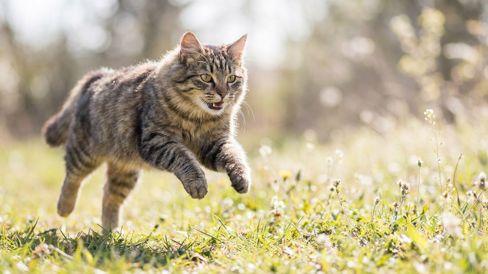

Одни насыпают полную миску на весь день, другие кормят строго дважды — и обе стороны уверены, что делают правильно. А между тем от режима кормления зависит вес кошки, здоровье мочевыводящей системы и даже её ночная активность. Разбираем, что говорит о природе кошки наука о питании и как выбрать частоту под свою.
🐾 Не уверены, что рацион подходит?
Напишите в AnimaLife, чем кормите, — приложение покажет, чего не хватает, и рассчитает порцию под вес, возраст и активность. Бесплатно.
Проверить рацион → Проверить в MAX →
У вас iPhone? AnimaLife есть в App Store
В природе кошка не садится за «завтрак» и «ужин» — она ловит мелкую добычу и съедает её понемногу, 8–12 раз в сутки. Желудок у кошки небольшой, а обмен веществ рассчитан на частые лёгкие перекусы, а не на два плотных приёма. Это важно помнить: любой домашний режим — это компромисс между природой кошки и удобством хозяина.
Когда сухой корм всегда в миске, кошка ест маленькими порциями — почти как в природе. Это удобно и подходит спокойным кошкам, которые не переедают. Но у метода есть слабые места.
Для большинства взрослых кошек ветеринары считают удобным режимом кормление 2–3 раза в день отмеренными порциями. Так проще контролировать вес, следить за аппетитом и совмещать сухой корм с влажным, который кошке полезен для питьевого баланса. Многим кошкам подходит вариант «дважды порционно плюс дневной перекус», а вечерняя порция помогает снизить ночную активность — сытая кошка реже будит хозяина в пять утра.
Универсального ответа нет — частота зависит от возраста, веса и здоровья.
Что бы вы ни выбрали, держите общий дневной объём в рамках нормы, а не «на глаз», обеспечьте свежую воду в стороне от миски с едой и раз в месяц проверяйте вес. Если аппетит резко изменился или кошка худеет при обычном рационе — это повод показаться врачу, а не менять корм наугад.
🐾 Соберите рацион под свою кошку
AnimaLife учитывает породу, возраст, вес и образ жизни и подсказывает, сколько и чем кормить. Плюс напоминания о кормлении и контроль веса.
Собрать рацион → Собрать в MAX →
У вас iPhone? AnimaLife есть в App Store
🐾 Понравился разбор?
Подпишитесь на канал — каждый день разбираем по одному тревожному симптому у кошек и собак: что в пределах нормы, а когда пора к врачу. Подпишитесь, чтобы не пропустить разбор, который может спасти здоровье вашего питомца.
Материал носит информационный характер и не заменяет очную консультацию ветеринара.